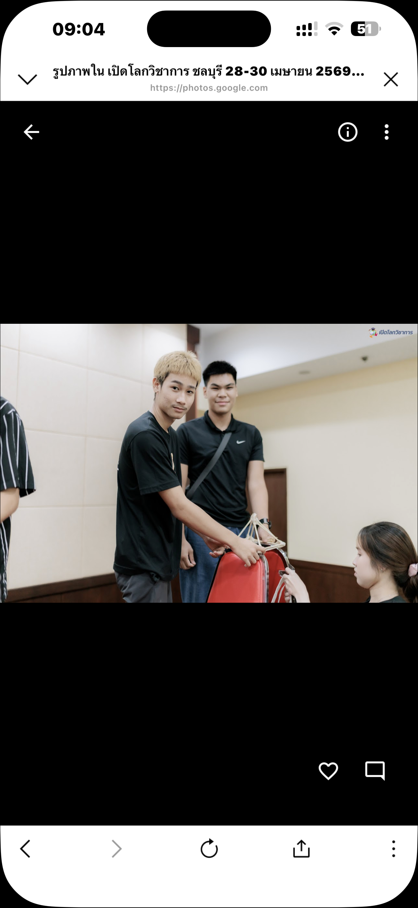
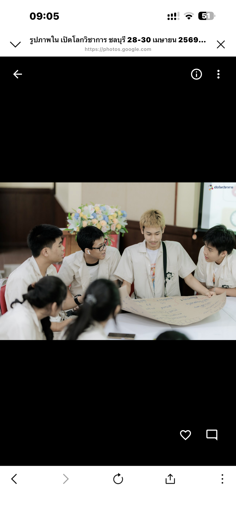
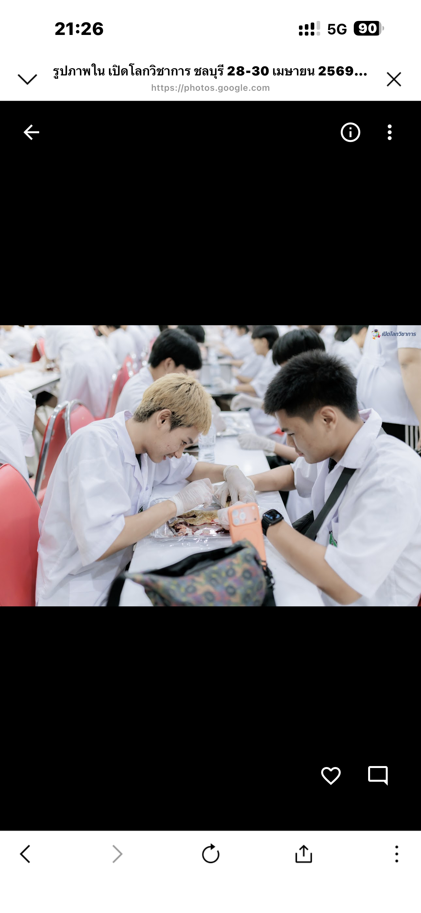
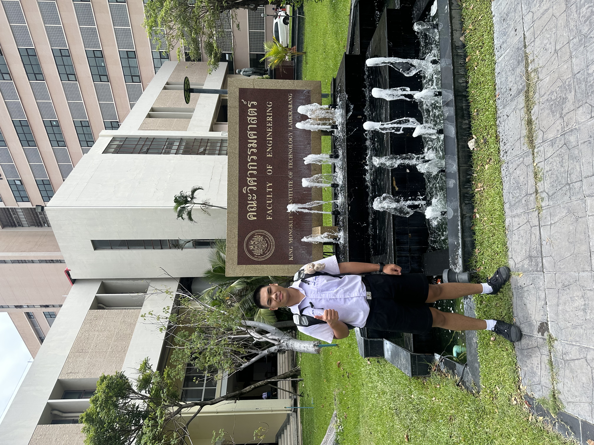
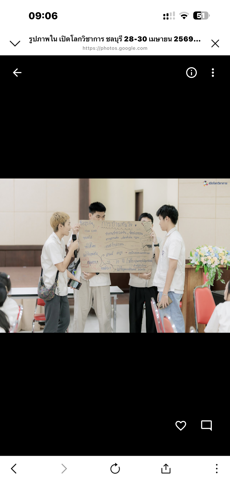

เกียรติบัตร
รวบรวมเกียรติบัตรและผลงานที่ได้รับจากกิจกรรมต่าง ๆ

เกียรติบัตรเข้าร่วมกิจกรรม K-Engineering World Tour and Competency Challenge 2026
เกียรติบัตรฉบับนี้ออกโดย คณะวิศวกรรมศาสตร์ สถาบันเทคโนโลยีพระจอมเกล้าเจ้าคุณทหารลาดกระบัง (KMITL) เพื่อรับรองว่า วรัญชิต วงศ์ศุภเลิศ ได้ผ่านการเข้าร่วมกิจกรรม "K-Engineering World Tour and Competency Challenge 2026" เมื่อวันที่ 5 กรกฎาคม พ.ศ. 2569 ลงนามโดย รองศาสตราจารย์ ดร.สมยศ เกียรติวุฒินนทวิไล คณบดีคณะวิศวกรรมศาสตร์

เกียรติบัตรเข้าร่วม Workshop หัวข้อ ระบบเครือข่ายพื้นฐานจากสายสื่อสารถึงอินเทอร์เน็ต [EE, Computing]
เกียรติบัตรฉบับนี้ออกโดย คณะวิศวกรรมศาสตร์ สถาบันเทคโนโลยีพระจอมเกล้าเจ้าคุณทหารลาดกระบัง (KMITL) เพื่อรับรองว่า วรัญชิต วงศ์ศุภเลิศ ได้ผ่านการเข้าร่วมกิจกรรม "K-Engineering World Tour and Competency Challenge 2026" เมื่อวันที่ 5 กรกฎาคม พ.ศ. 2569 ลงนามโดย รองศาสตราจารย์ ดร.สมยศ เกียรติวุฒินนทวิไล คณบดีคณะวิศวกรรมศาสตร์

เกียรติบัตรเข้าร่วม Workshop หัวข้อ ปัญญาประดิษฐ์พื้นฐานร่วมกับข้อมูลด้านความมั่นคงปลอดภัยทางไซเบอร์ [EE, Computing]
เกียรติบัตรฉบับนี้ออกโดย คณะวิศวกรรมศาสตร์ สถาบันเทคโนโลยีพระจอมเกล้าเจ้าคุณทหารลาดกระบัง (KMITL) เพื่อรับรองว่า วรัญชิต วงศ์ศุภเลิศ ได้เข้าร่วมการฝึกอบรมเชิงปฏิบัติการ (Workshop) หัวข้อ "ปัญญาประดิษฐ์พื้นฐานร่วมกับข้อมูลด้านความมั่นคงปลอดภัยทางไซเบอร์ [EE, Computing]" ในงาน K-ENGINEERING WORLD TOUR AND COMPETENCY CHALLENGE 2026 เมื่อวันที่ 5 กรกฎาคม พ.ศ. 2569 ลงนามโดย รองศาสตราจารย์ ดร.สมยศ เกียรติวุฒินนทวิไล คณบดีคณะวิศวกรรมศาสตร์

ใบประกาศรับรองการเข้าร่วมอบรมกิจกรรมการป้องกันและรณรงค์ต่อต้านยาเสพติด
ใบประกาศฉบับนี้ออกโดย กองอำนวยการรักษาความมั่นคงภายในจังหวัดเพชรบุรี (กอ.รมน.จังหวัด เพชรบุรี) เพื่อแสดงว่า นายวรัญชิต วงศ์ศุภเลิศ ได้เข้าร่วมอบรมกิจกรรมโดยเป็นผู้ที่มีส่วนเกี่ยวข้อง กับการป้องกันและรณรงค์ต่อต้านยาเสพติด มอบให้ไว้ ณ วันที่ 28 เมษายน พ.ศ. 2569 ลงนามโดย พันเอกเฉลิมพล สังข์ต้อง รองผู้อำนวยการรักษาความมั่นคงภายในจังหวัดเพชรบุรี ปฏิบัติหน้าที่ ผู้อำนวยการรักษาความมั่นคงภายในจังหวัดเพชรบุรี

เกียรติบัตรเข้าร่วมกิจกรรมกับกลุ่มอาสาไทยแลนด์ (R-SA THAILAND)
ใบประกาศฉบับนี้ออกโดย กองอำนวยการรักษาความมั่นคงภายในจังหวัดเพชรบุรี (กอ.รมน.จังหวัด เพชรบุรี) เพื่อแสดงว่า นายวรัญชิต วงศ์ศุภเลิศ ได้เข้าร่วมกิจกรรมกับกลุ่มอาสาไทยแลนด์ มอบให้ไว้ ณ วันที่ 28 เมษายน พ.ศ. 2569

เกียรติบัตรเข้าร่วมกิจกรรมปลูกต้นโกงกางทำบ้านปลา ค่ายอนุรักษ์ป่าชายเลนเทศบาลบางทราย จ.ชลบุรี
เกียรติบัตรฉบับนี้ออกโดย กลุ่มกฤษณ์จิตอาสา เพื่อแสดงว่า นายวรัญชิต วงศ์ศุภเลิศ ได้ปฏิบัติกิจกรรมปลูกต้นโกงกางทำบ้านปลา ณ สะพานป่าชายเลนเทศบาลบางทราย ในค่ายอนุรักษ์ป่าชายเลนเทศบาลบางทราย จ.ชลบุรี ให้ไว้ ณ วันที่ 29 เมษายน พ.ศ. 2569 ลงนามโดย นายกฤษณ์วรา รุ่งโรจน์ (ประธานกลุ่มกฤษณ์จิตอาสา)

เกียรติบัตรผ่านการอบรมกิจกรรม "ผู้นำรุ่นใหม่ในยุคสื่อดิจิทัล จากรู้เท่าทันสู่ผู้สร้างการเปลี่ยนแปลงทางสังคม"
เกียรติบัตรฉบับนี้ออกโดย เครือข่ายนักสื่อสารรุ่นใหม่ ภายใต้การสนับสนุนของสำนักงานกองทุนสนับสนุนการสร้างเสริมสุขภาพ (สสส.) เพื่อแสดงว่า วรัญชิต วงศ์ศุภเลิศ ได้ผ่านการอบรมกิจกรรมหัวข้อ "ผู้นำรุ่นใหม่ในยุคสื่อดิจิทัล จากรู้เท่าทันสู่ผู้สร้างการเปลี่ยนแปลงทางสังคม" เมื่อวันที่ 28 เมษายน พ.ศ. 2569 ณ ห้องประชุมศูนย์ปฏิบัติการโรงแรมเทา-ทอง มหาวิทยาลัยบูรพา

เกียรติบัตรเข้าร่วมกิจกรรมเชิงปฏิบัติการ โครงการ "เปิดโลกวิชาการ 2026"
เกียรติบัตรฉบับนี้ออกโดย ศูนย์แนะแนวและเตรียมสอบ ม.บูรพา เพื่อแสดงว่า นายวรัญชิต วงศ์ศุภเลิศ ได้เข้าร่วมกิจกรรมเชิงปฏิบัติการ โครงการ "เปิดโลกวิชาการ 2026" ณ ห้องประชุมเทาทอง 5 ศูนย์ปฏิบัติการโรงแรมเทา - ทอง มหาวิทยาลัยบูรพา ในระหว่างวันที่ 28 - 30 เมษายน พ.ศ. 2569

เกียรติบัตรรับรองความสามารถด้านความมีน้ำใจบนโลกออนไลน์ (Internet Kindness - Be Internet Awesome)
เกียรติบัตรฉบับนี้ออกโดย Google ผ่านโปรแกรม Be Internet Awesome / Interland เพื่อรับรองว่า waranchit wongsupalerd ได้แสดงความสามารถด้านความมีน้ำใจบนโลกออนไลน์ และมีส่วนช่วยสร้างสภาพแวดล้อมออนไลน์ที่เป็นมิตร

เกียรติบัตรรับรองความสามารถด้านความตื่นตัวและรู้เท่าทันบนโลกออนไลน์ (Internet Alertness - Be Internet Awesome)
เกียรติบัตรฉบับนี้ออกโดย Google ผ่านโปรแกรม Be Internet Awesome / Interland เพื่อรับรองว่า waranchit wongsupalerd ได้พิสูจน์แล้วว่ามีความตื่นตัวและรู้เท่าทันบนโลกออนไลน์ โดยสามารถแยกแยะความแตกต่างระหว่างข้อมูลจริงและข้อมูลปลอมได้

เกียรติบัตรรับรองความชาญฉลาดในการแบ่งปันข้อมูลบนโลกออนไลน์ (Internet Smartness - Be Internet Awesome)
เกียรติบัตรฉบับนี้ออกโดย Google ผ่านโปรแกรม Be Internet Awesome / Interland เพื่อรับรองว่า waranchit wongsupalerd ได้แสดงความเข้าใจในการแบ่งปันข้อมูลอย่างเหมาะสม และการใช้งานโลกออนไลน์อย่างปลอดภัย

เกียรติบัตรรับรองความเข้มแข็งในการปกป้องข้อมูลส่วนตัวบนโลกออนไลน์ (Internet Strength - Be Internet Awesome)
เกียรติบัตรฉบับนี้ออกโดย Google ผ่านโปรแกรม Be Internet Awesome / Interland เพื่อรับรองว่า waranchit wongsupalerd ได้แสดงความเข้าใจในการปกป้องข้อมูลส่วนตัว และการรักษาความปลอดภัยของตนเองบนโลกออนไลน์
ภาพกิจกรรม
ภาพกิจกรรมและประสบการณ์ที่ได้เข้าร่วม

ภาพกิจกรรม

ภาพกิจกรรม

ภาพกิจกรรม

ภาพกิจกรรม
